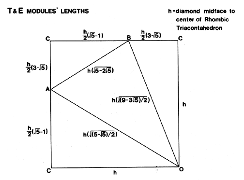

Fig. 986.411A T and E Quanta Modules: Edge Lengths: This plane net for the T Quanta Module and the E Quanta Module shows their edge lengths as ratioed to the octa edge. Octa edge = tetra edge = unity.
Copyright © 1997 Estate of R. Buckminster Fuller